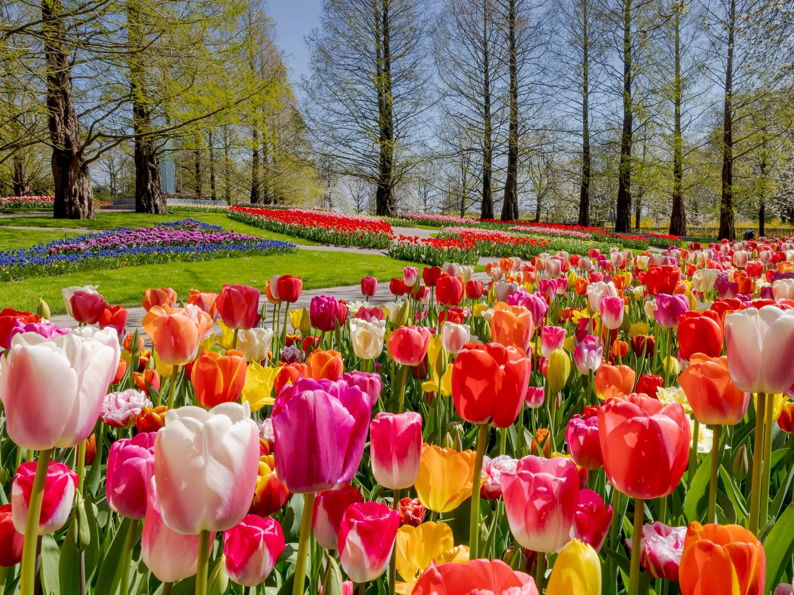

Did you know?

Dutch culture mainly reflects interests related to the environment, economy and human well–being. The best parts of the Netherlands can be found in its history, customs and traditions.If you seek to understand these topics, read on!
Thinking Dutch
You would never get bored learning more about these topics!


History
What you should know about Hoofddorp
The municipality of Haarlemermeer, of which the city Hoofddorp is a part of, was one a bogland. In Dutch it is named a polder.
This land had been previously separated from the Rhine. It was named Haarlemermeer, which has the meaning “The lake Haarlem”.
The city Hoofddorp descends from the village Kruisdorp, which took birth in 1853. This happened after the lake was drained in 1852. The innovation that was used is the steam mill. The museum Cruquius houses such a model.
Until now the municipality of Haarlemermeer has come to include 32 towns, villages and hamlets. The city Hoofddorp is part of the most crowdy area in the country. The conurbation Randstad also covers the cities Hoofddorp, Nieuw Vennep and Badhoevendorp.
The growth of the city is largely due to agriculture, trade and the establishment of the Schipol airport.
Famous people

Meet the brightest minds in Hoofddorp
Many people from the field of arts, music and sports were born or lived in Hoofddorp. Among them:
The musician and arranger Jaap Hofland — he is well–known for his singing group The Moonliners. Due to his composer and instruments playing skills, he worked for many years arranging music for famous orchestras.
The Surinamese Dutch singer Oscar Harris — he became worldwide known. He is well–known for his success with the band The Twinkle Stars. One of them was the hit “The soldier's prayer” from the 70's. He released 20 albums and 54 singles.
The Dutch athlete Francina Elje Blankers Koen — she was a gold medalist several times at the Olympic games. She won many international championships.
Traditions
Find out about the activities of interest in the city
One of the biggest traditions in the Netherlands is represented by flowers.
The flowers are visited to be auctioned, contemplated in tours, sold nationwide and worldwide.
Across the Netherlands, the Floriade garden festival is an important tradition. Since 1960 it was held every 10 years in different cities. The festival was organized with the idea to praise the arts of gardening, garden and landscape design.
Due to these activities of major interest worldwide, the Floriade festival had dozens of countries participating in each edition organized so far. With the beautiful landscape of the Haarlemermeerse bos, Hoofddorp hosted one of the festival editions.
Hoofddorp has many flower shops with impressive flower collections. Pinch your artist imagination at one of the flower shops in Hoofddorp!